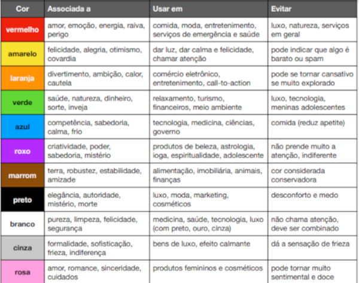

Cores
Videos para estudo sobre cores
Psicologia das Cores
Representando Cores
Harmonia de Cores
Paleta de Cores
Gradiante
Cada cor tem o poder de manipulação de um ou mais sentimentos
Segue a Tabela:

Quando se pensa em disign de um site existe algumas coisas a se pensar, como por exemplo:
Vá para Styles
Vá para Estudo das Letras
Vá para Inicio